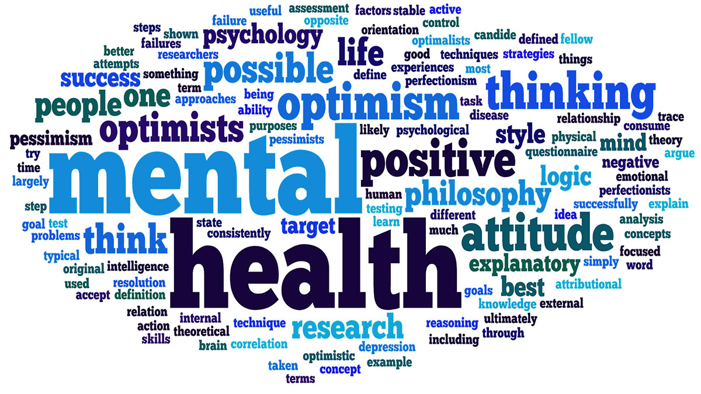

Technology can be accessed so easily these days that everyone owns some kind of device that provides access to the Internet. The new Apple update provides weekly feedback on your personal 'screen time.' It is so easy to think that you don't spend too much time of devices but the new update really puts into perspective the amount of hours we spend on them. Now more than ever, screen time is affecting college student's mental health and their lives in general.
Being a student means you interact with screens, either phones, computer, or tablet, daily. A lot of universities, such as Florida State University, use Canvas to access assignments. A study published in Acta Padiatrica shows that screen time does negativly impact lower connectivity in regions of the brain that control language and cognitive control. The study also shows that excess screen time can affect mental health, ultimately making us unhealthy. For example, Jean M. Twenge, a psychology professor at San Diego State University, says that, "All screen activities are linked to less happiness, and all nonscreen activities are linked to more happiness.”
Students are also extremely busy and sleep is a very precious thing that is we take for granted. The average amount of sleep for college age students is 8 hours. According to the Naional Sleep Foundation, our devices emit a blue light that is proven to prevent or even decrease the production of melatonin, a sleep hormone.
According to a Baylor University study, males spend approximately 8 hours a day on their cell phones, while females spend up to 10 hours per day. The study also found that 60% of participants admitted their cell phones addiction and that they primarily used their devices for social media or texting. It is really hard to limit screen time as a student. While it's used in the classroom it's also a way to distract from responsibilities by watching Netflix or YouTube. Just trying to "limit" screen time isn't going to work.
“We may have to exercise discipline to use the controls we have but we are not slaves to these devices unless we allow ourselves to become so. To me, the trick is to put yourself in charge of your screens instead of allowing your screens to be in charge of you.” – Dr. Edward Hallowell, MD, child and adult psychiatrist, NY Times best-selling author and leading authority in ADHD
Strategies to Limit Screen Time:
There was a time in history when technology wasn't around. People actually had to go outside and interact with each other when they wanted to have fun
Non-Screen Time Activities (According to HuffPost Life a few of the 100 things to-do):

Word cloud reflecting positive mental health words.